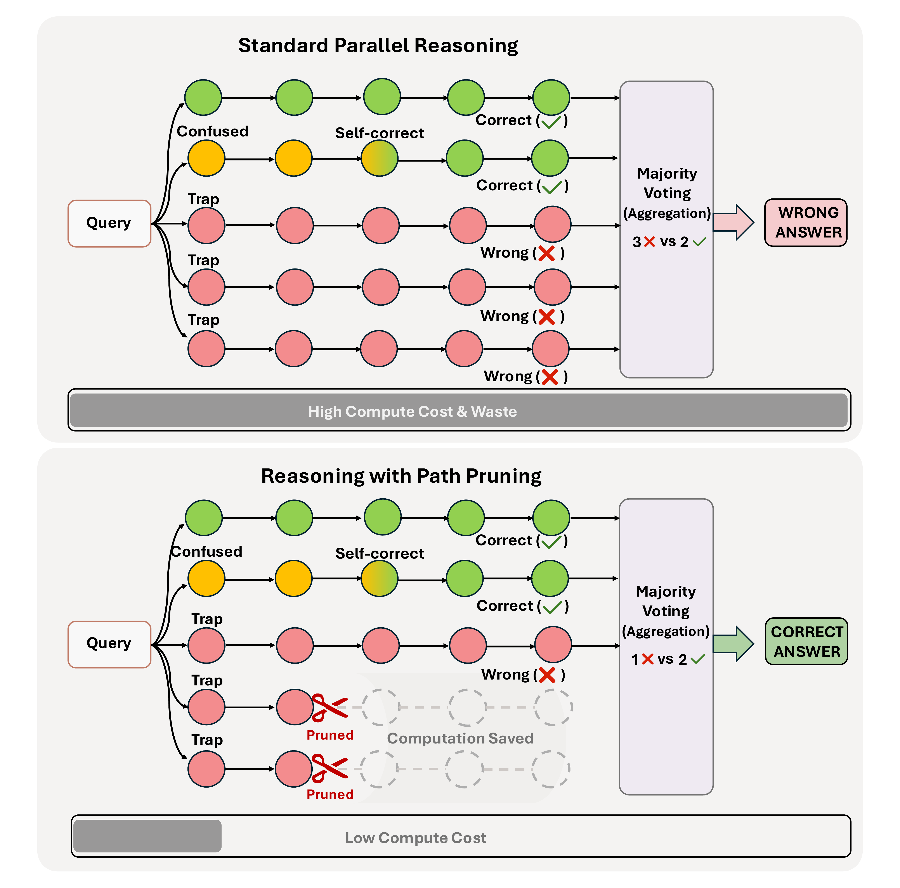
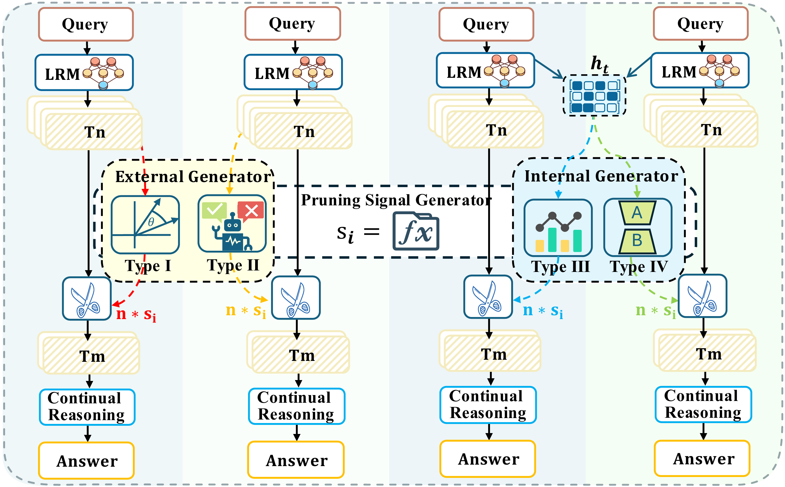
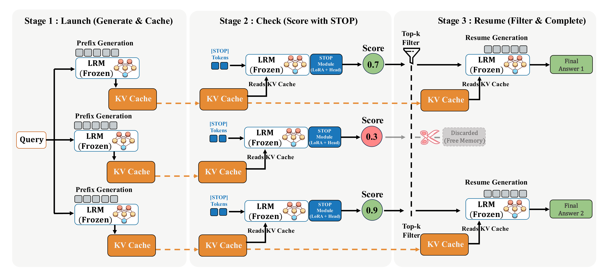
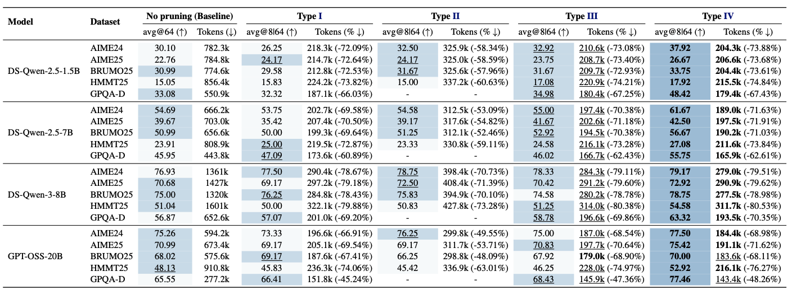

TL;DR
STOP is a lightweight pruning module that identifies doomed reasoning paths from their early prefixes. It is the first instantiation of learnable internal pruning, improving parallel reasoning accuracy while reducing token usage by over 70% in many settings.
Why prune early?
In standard parallel reasoning, every sampled path is generated to completion and then aggregated. But many paths fail due to early mistakes and still consume equal compute. Worse, they can pollute the final vote.

A unified view of path pruning
We organize prior work by two axes: whether the pruning signal comes from internal or external states, and whether it is learnable or not. This taxonomy reveals an unexplored sweet spot: learnable internal pruning.

Method: STOP
STOP is a lightweight, non-invasive module built on top of a frozen reasoning model. Instead of re-encoding the full text, it appends a short sequence of learnable [STOP] tokens to the cached reasoning prefix, reads the prefix KV cache, and predicts whether the trajectory should be resumed.
- Launch: generate short prefixes and cache internal states.
- Check: append
[STOP]and score each prefix using a small adapter. - Resume: keep only the top-ranked candidates and continue generation.

Key results
STOP consistently improves effectiveness and efficiency across reasoning models from 1.5B to 20B. It also generalizes beyond standard benchmarks to realistic tool-use settings.

Main takeaway
| Setting | Result |
|---|---|
| AIME24 (1.5B) | 30.10 → 37.92 |
| Token usage | > 70% reduction |
AIMO3 competition with tool use
| Method | Score |
|---|---|
| Baseline + Tool | 39 |
| STOP (24→8) | 42 |
| STOP (16→8) | 43 |
Scaling law for deployment
Beyond a single method, STOP also provides a practical deployment rule. We derive an empirical guideline that predicts the optimal retention ratio based on compute budget, prefix length, and task length.

Abstract
Parallel reasoning enhances Large Reasoning Models (LRMs) but incurs prohibitive costs due to futile paths caused by early errors. To mitigate this, path pruning at the prefix level is essential, yet existing research remains fragmented without a standardized framework. We propose the first systematic taxonomy of path pruning, identify learnable internal pruning as a missing paradigm, and instantiate it with STOP (Super TOken for Pruning). Extensive evaluations across LRMs ranging from 1.5B to 20B demonstrate that STOP improves both effectiveness and efficiency. We further validate its scalability under varying compute budgets and distill these observations into practical deployment guidelines.
Citation
@misc{bi2026cut,
title={Cut Your Losses! Learning to Prune Paths Early for Efficient Parallel Reasoning},
author={Bi, Jiaxi and Luo, Tongxu and Du, Wenyu and Tang, Zhengyang and Wang, Benyou},
year={2026},
eprint={2604.16029},
archivePrefix={arXiv},
primaryClass={cs.CL}
}